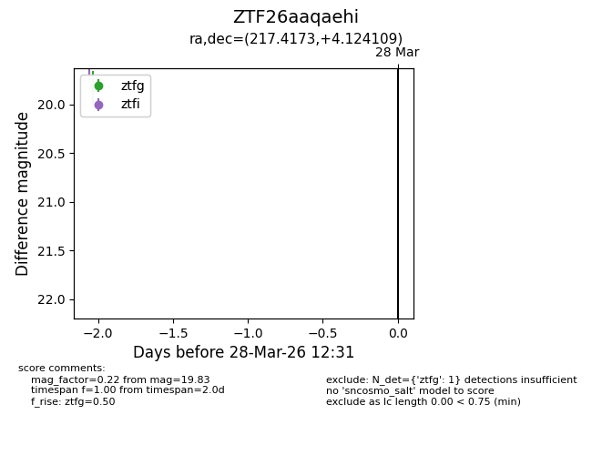
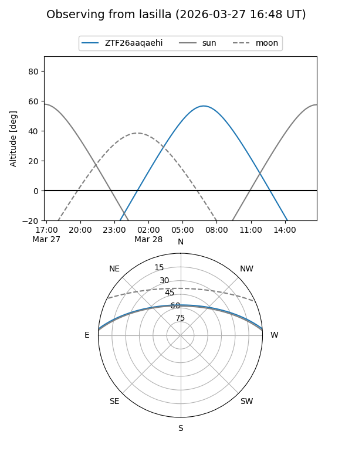
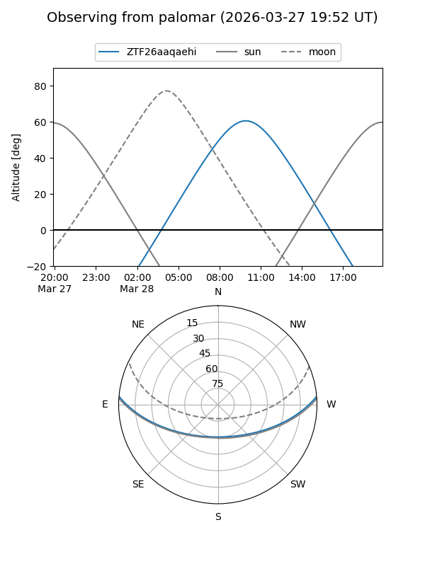

ZTF26aaqaehi
Target ZTF26aaqaehi at 2026-03-28 12:35
Aliases and brokers:
FINK: link
Lasair: link
ALeRCE: link
alt names
ZTF26aaqaehi (ztf,fink_ztf)
Coordinates:
equatorial (ra, dec) = 217.4173,+4.12411
equatorial (HMS+DMS) = 14:29:40.15,+04:07:26.79
galactic (l, b) = (352.7846,+57.15900)
Flags:
Photometry:
last ztfg=19.83
1 ztfg detections
Lightcurve

Visibility


Additional plots